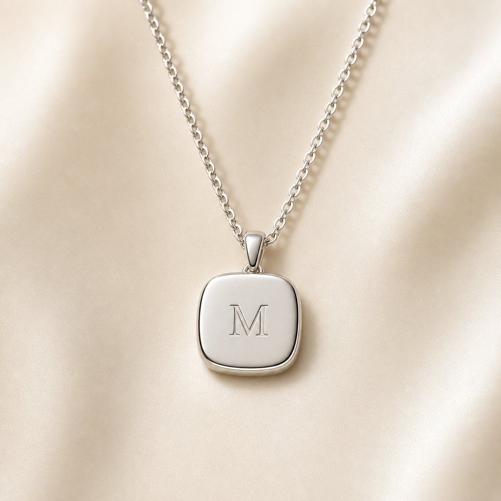

The Signet Pendant
A cushion-shaped signet on a fine chain. Engraved with his initial — or hers, if it's the name he carries close.
- Metals. Sterling silver · gold vermeil · solid 14k gold
- Chain. 20–22″ adjustable · 22–24″ adjustable
- Dimensions. 22mm × 28mm cushion face
- Ships in. 7–14 days
Shown: Sterling Silver · M · 20–22″ chain